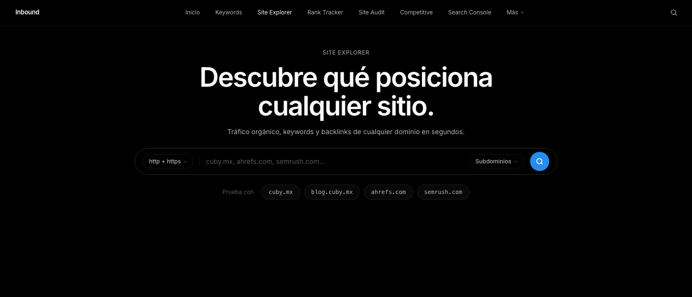
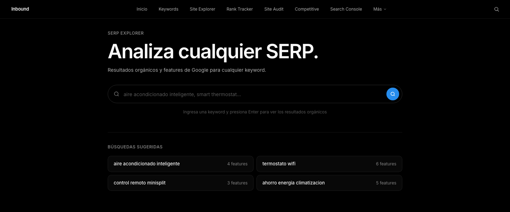
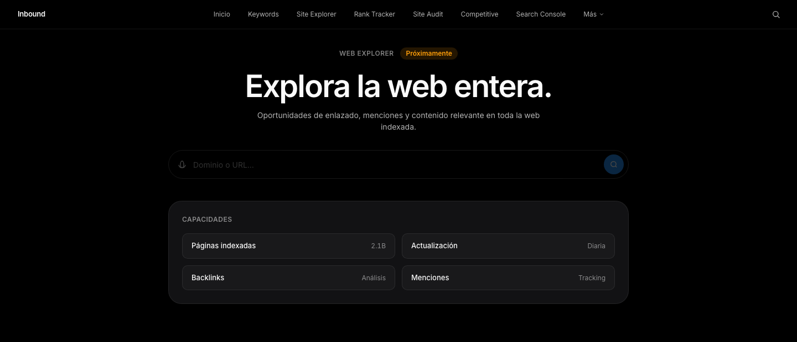
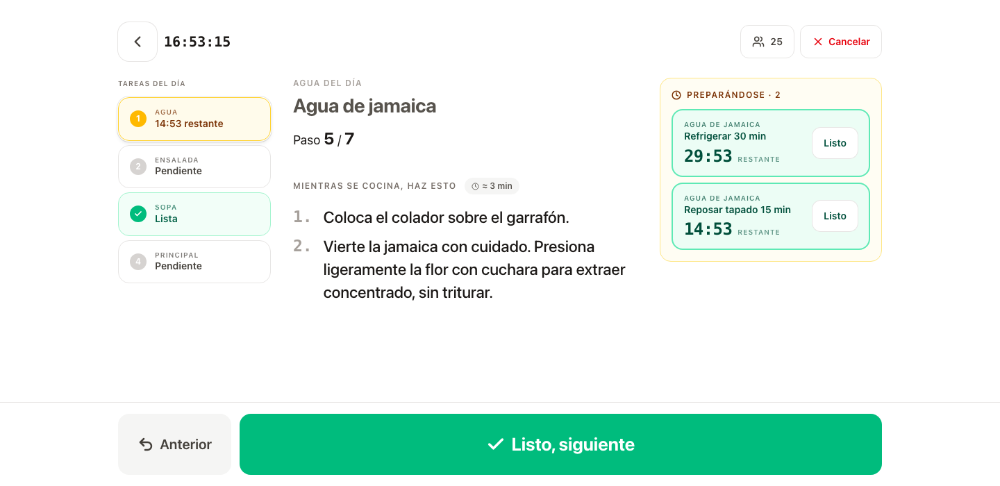
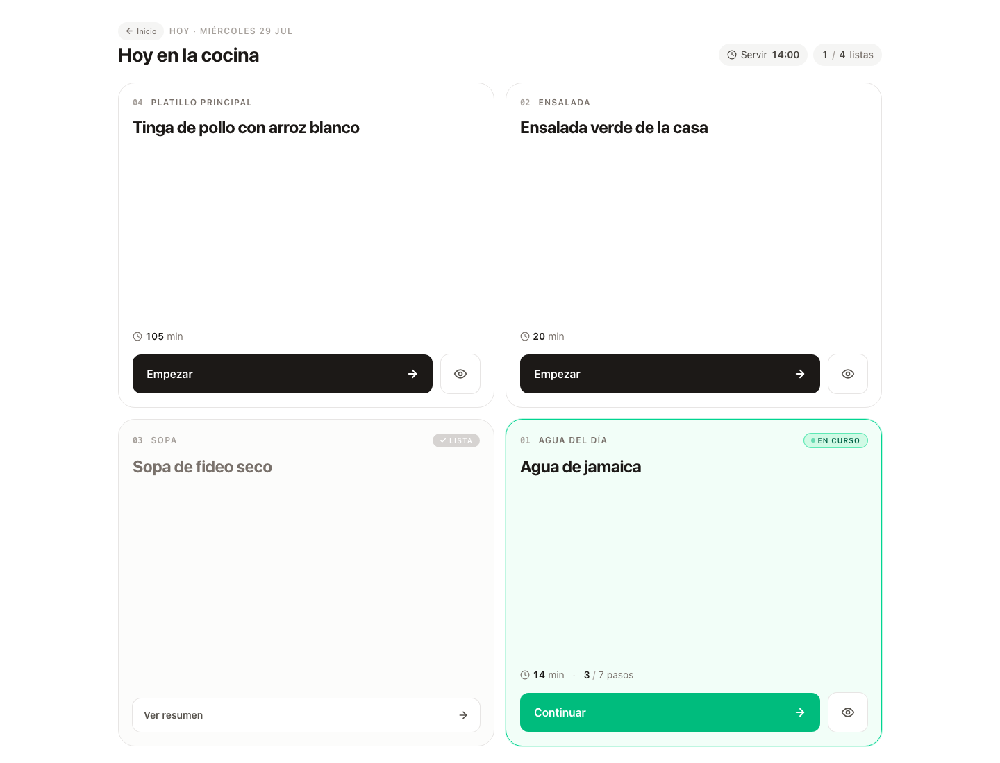
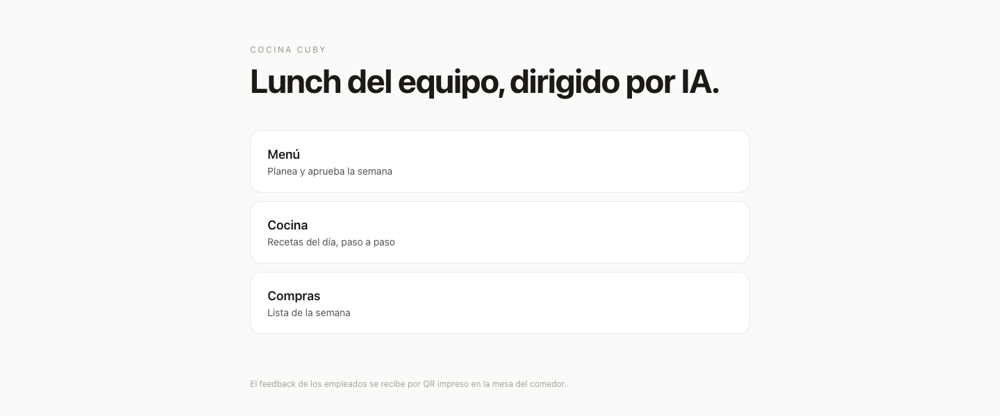

Luis González · Monterrey, México
Trabajo la lógica, el diseño y el enfoque a conversión. Cuando el equipo necesita una plataforma que no existe en el mercado, la construyo.
01
Construido conSvelteKit · TypeScript · Convex · APIs de Google Search Console y DataForSEO
Reemplaza la suscripción a una suite de SEO comercial. Ocho módulos bajo una misma navegación: exploración de dominios, investigación de keywords, análisis de resultados de búsqueda, monitoreo de posiciones y auditoría técnica. La interfaz es deliberadamente oscura y silenciosa, porque se usa muchas horas al día y compite con la atención de la propia pantalla de Google.



02
Construido conSvelteKit · TypeScript · Convex · Claude para planear el menú
La comida del equipo se planea, se cocina y se mide en un mismo lugar. El menú de la semana lo propone un modelo de lenguaje y una persona lo aprueba. La pantalla de cocina corre en una tablet junto a la estufa: cronómetros por platillo, un paso a la vez y botones grandes porque se opera con las manos ocupadas. El comensal deja su opinión escaneando un código impreso en la mesa.



Las pantallas de arriba son capturas: esas dos plataformas corren contra bases de datos internas. Esta pieza, en cambio, está publicada y funciona completa en el navegador.
Abrir el configurador →